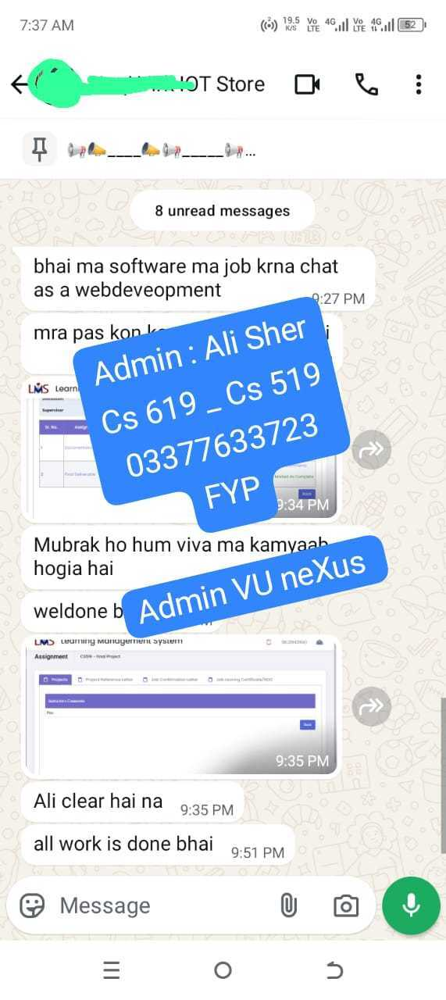
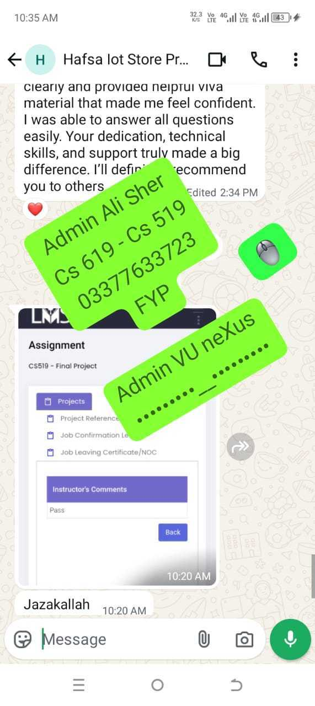
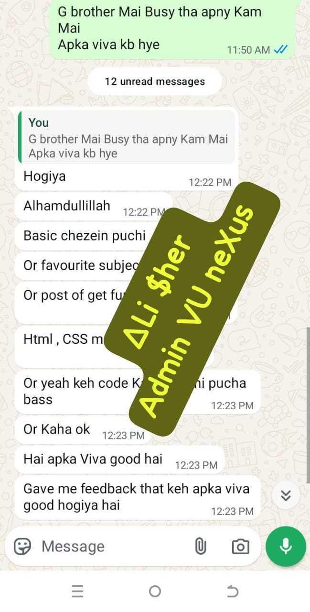
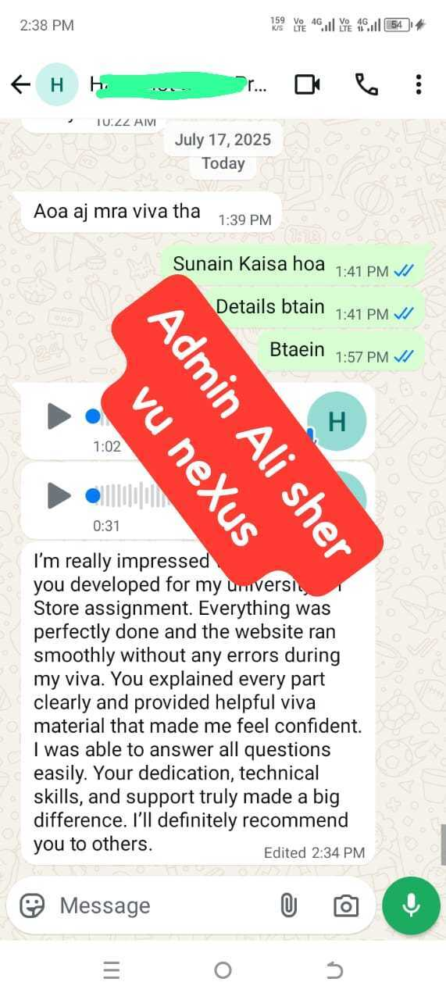
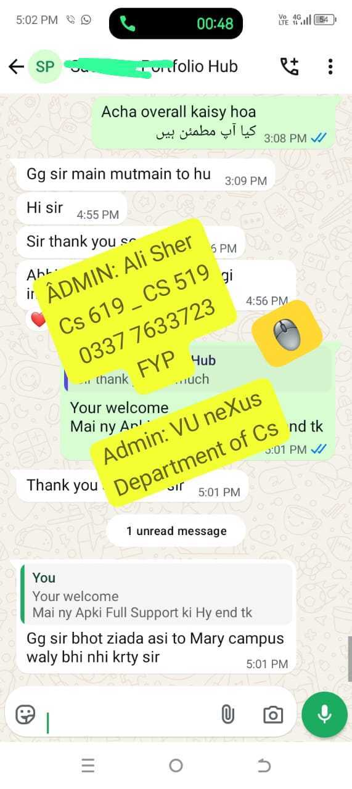
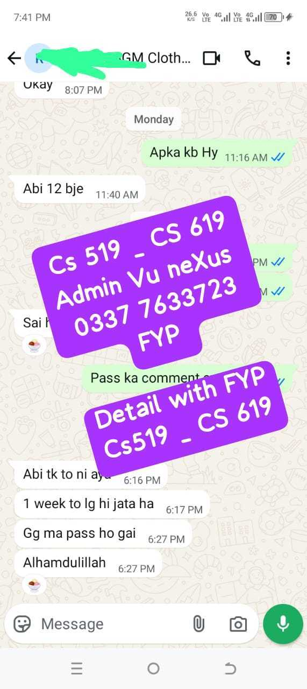
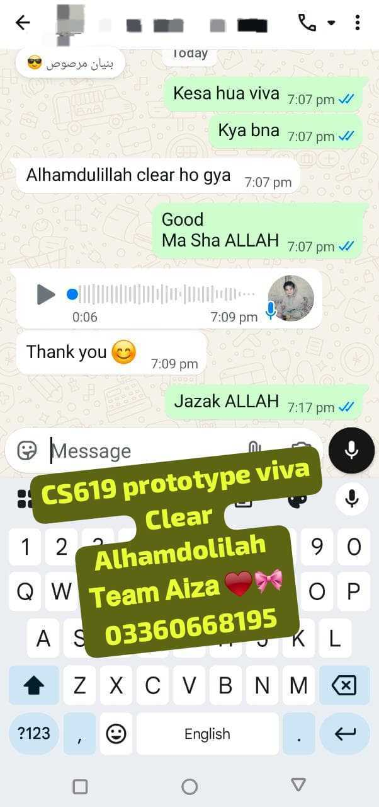
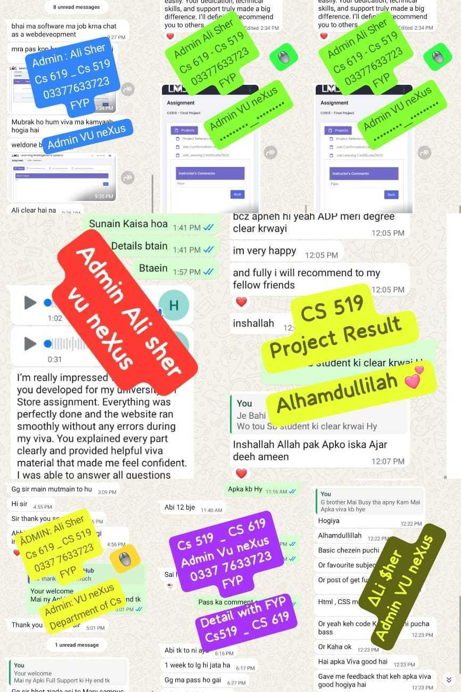
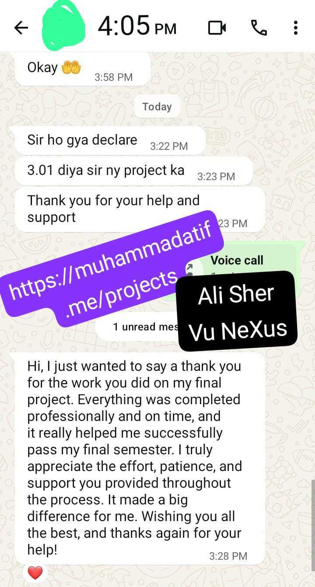

Virtual University Showcase
VU Projects
Dedicated portfolio area for Virtual University semester projects and student feedback. Select a semester to view project highlights and testimonial responses.
Virtual University Showcase
Dedicated portfolio area for Virtual University semester projects and student feedback. Select a semester to view project highlights and testimonial responses.
Virtual University of Pakistan

Destination recommendation and itinerary backend with real-time processing and API-first design.

Enterprise-style event management backend with role permissions, notifications, and data workflows.

Smart scheduling, content dispatch, and analytics for lecture automation in education workflows.

Learning backend for coding education, including progress tracking, assessments, and content delivery APIs.

Fair participant randomization backend with admin controls, validation layers, and transparent selection logic.

Fraud and duplicate detection backend using verification pipelines and consistency rules.

Scalable backend connecting employers and candidates with application workflows and profile systems.
E-commerce backend for IoT devices with inventory management, order processing, and catalog APIs.

Community hiring and networking backend where alumni share opportunities and collaborate professionally.

Patient, appointment, and record handling backend for clinics with workflow automation and reporting.

Secure backend for registration and access workflows, including validation and role-based permissions.
FB.

"Ali bhai ne Pakistan Traveling Assistant ka backend bohat zabardast banaya. Viva me har flow easily explain ho gaya aur project smoothly run hua."
Project: Pakistan Traveling Assistant

"Event Management System ki documentation aur modules itne clear thay ke mujhe viva se pehle full confidence mil gaya. Proper support mila."
Project: Event Management System

"Automated Lectures System me schedule aur report wala part perfectly work kar raha tha. Prototype viva clear karna easy ho gaya."
Project: Automated Lectures System

"Kids Coding LMS ka complete module time par deliver hua, dashboard aur assignments sab clear thay. Demo de kar marks bhi achay aye."
Project: Kids Coding LMS

"Lucky Draw System ka logic bilkul professional bana, aur jo presentation points mile un se final viva me bohat help hui."
Project: Lucky Draw System

"Trace Fake project me detection flow aur report generation smooth thi. Ali bhai ne har point simple roman urdu me samjha diya."
Project: Trace Fake

"Online Job Portal complete aur error-free mila. Admin side aur user side dono strong thay aur viva ke answers bhi ready mil gaye."
Project: Online Job Portal

"Online IoT Store ka backend bohat acha bana, APIs aur modules neat thay. Final report aur PPT bhi proper form me mili."
Project: Online IoT Store

"Clinic Management System ka complete flow bohat smooth tha. Ali Sher ne full support di aur main confidently viva clear kar gaya."
Project: Clinic Management System